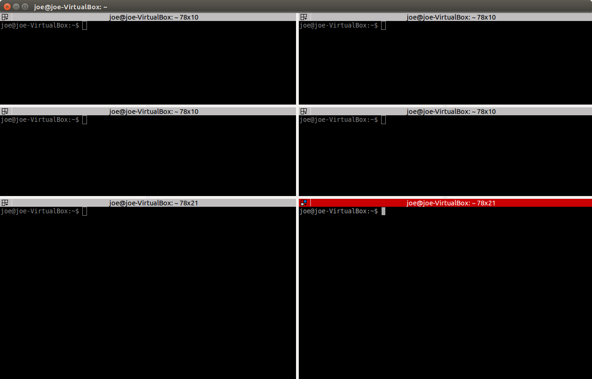
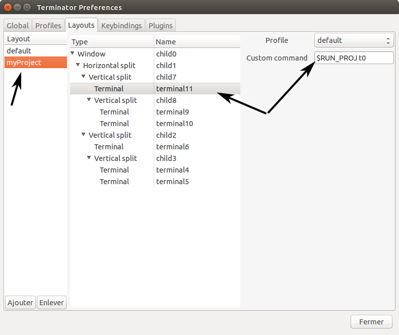
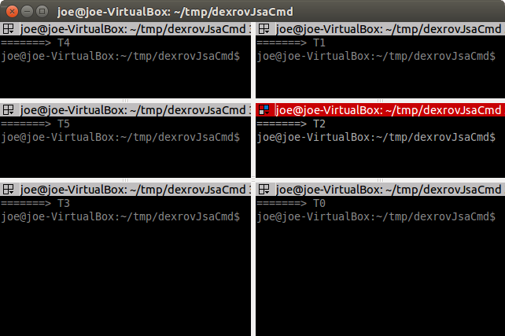

Automatically draw an outline around an image:
The idea comes from Aurelien Ibanez. The image should have a transparent background.
first, the image borders are cropped (to get space at the borders),
and then the black outlines are drawn.
#!/bin/bash
# To use it, run the command:
# bash create_outline.sh input_img.png output_img.png
WIDTH=`identify -format "%[fx:w]" "$1"`
HEIGHT=`identify -format "%[fx:h]" "$1"`
convert $1 -crop $((WIDTH-4))x$((HEIGHT-4))+2+2 $2
convert $2 -bordercolor \#00000000 -border 2 -alpha on $2
convert $2 \( +clone -channel A -morphology EdgeOut Diamond:2 \
+channel +level-colors black \) -compose DstOver -composite $2
Run terminator with many scripts at once:
When working on Linux, e.g. when developping ROS applications, it is generally necessary to open many terminals, the ROS core, the processing nodes, the simulator, the visualization software, etc. This dull task can be scripted with the 'terminator' application.
-
First create open terminal and create the desired layout:

-
Save your layout (right-click->preferences, panel "layouts")

Save your configuration with the name of your project
For each terminal write the custom command "$RUN_PROJ txx"
where 'xx' is the index of the terminal
-
Create the following script:
#!/bin/bash
ARG=$1
if [[ "$ARG" == "" ]]; then
D="$( cd "$( dirname "${BASH_SOURCE[0]}" )" && pwd )/"
export RUN_PROJ=$D`basename $0`
terminator -m -l myProject
elif [[ "$ARG" == "t0" ]]; then
echo "=======> T0"
bash
elif [[ "$ARG" == "t1" ]]; then
echo "=======> T1"
bash
elif [[ "$ARG" == "t2" ]]; then
echo "=======> T2"
bash
elif [[ "$ARG" == "t3" ]]; then
echo "=======> T3"
bash
elif [[ "$ARG" == "t4" ]]; then
echo "=======> T4"
bash
elif [[ "$ARG" == "t5" ]]; then
echo "=======> T5"
bash
else
echo "invalid arg"
fi
-
You can now run this new script without any argument. By doing so, the program gets the path and name of this script, which is exported in the env variable "RUN_PROJ". Then it runs 'terminator' with your defined layout.
Each terminal in the layout will run the custom command, i.e. "$RUN_PROJ txx". Which means that this scripts is called back by terminator with an argument that depends on the terminal index. Each "elif" block is run independently.

-
You just need to change in the script the " echo "=====> Txx" " by your own commands.
Note that a "bash" command is added at the end of each "elif" block. This is to prevent the terminal to close, which is the case when the process is finished.
|